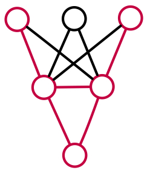

Introduction to Neural Network Verification

Deep learning has transformed the way we think of software
and what it can do.
But deep neural networks are fragile and their behaviors are often surprising.
In many settings, we need to provide formal guarantees on the safety, security, correctness, or robustness of neural networks.
This
in-progress book covers foundational ideas from
formal verification and their adaptation to reasoning about
neural networks and deep learning.
📖 Book in PDF:
A rough draftPlease email me comments, typos, etc.
Part I Neural networks and correctness
1. Neural networks and correctness
2. Neural networks as graphs
3. Correctness properties
Part II Constraint-based verification
4. Logic and satisfiability
5. Encodings of neural networks
6. DPLL modulo theories
7. Neural theory solvers
Part III Abstraction-based verification
8. Neural interval abstraction
9. Neural zonotope abstraction
10. Neural polyhedron abstraction
11. Verification with abstract interpretation
12. Abstract training of neural networks
13. Looking ahead
Please use the following to cite this book.
@book{albarghouthi-book,
title = {Introduction to Neural Network Verification},
author = {Aws Albarghouthi},
publisher = {verifieddeeplearning.com},
note = {\url{http://verifieddeeplearning.com}},
year = {2021}
}
Last updated